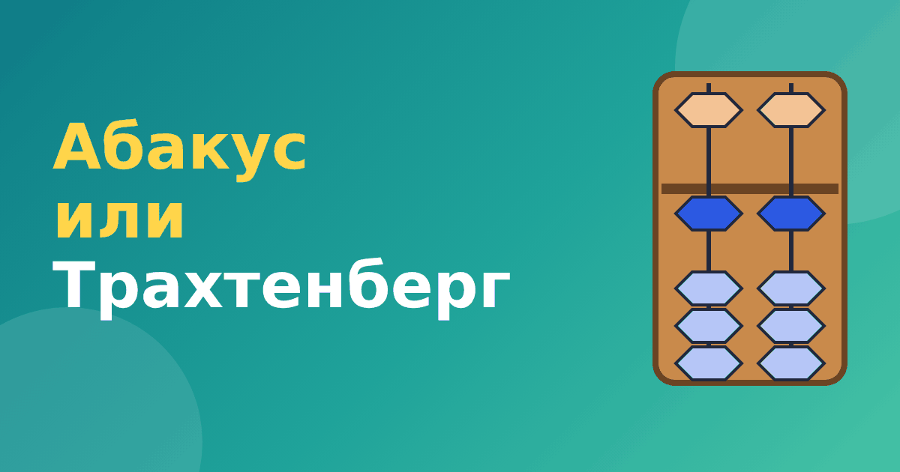

Ментальная арифметика или Трахтенберг: сравнение методов счёта

Родители, которые хотят научить ребёнка считать быстро, часто выбирают между двумя популярными подходами: ментальной арифметикой и системой Трахтенберга. Оба обещают быстрый счёт для детей, но устроены совершенно по-разному. Давайте сравним их спокойно, чтобы вы могли выбрать то, что подходит именно вам.
Суть методов в двух словах
Ментальная арифметика опирается на абакус. Сначала ребёнок считает на счётах, потом представляет их в голове. В основе лежит образ и руки. Подробнее: что такое ментальная арифметика.
Система Трахтенберга — набор правил для устного счёта на бумаге и в уме. Для умножения на каждое число от 3 до 12 есть своё короткое правило: например, при умножении на 11 нужно складывать цифры с соседями. Таблица умножения почти не нужна. Подробнее: система Трахтенберга.
Сравнение по главным пунктам
- Что нужно для занятий. Для абакуса желательны счёты или их виртуальная версия. Для Трахтенберга хватит листа бумаги и ручки.
- Что лучше всего получается. Абакус учит складывать и вычитать, особенно цепочки чисел. Система Трахтенберга сильна в умножении, делении и проверке.
- Сколько времени нужно. Освоить абакус до уверенного мысленного счёта нужно несколько месяцев. Отдельные приёмы Трахтенберга, например умножение на 11, можно освоить за вечер.
- Нужно ли помнить таблицу умножения. На абакусе умножение требует таблицу. В системе Трахтенберга она почти не нужна.
- Как это связано со школой. Абакус даёт образ числа, и многим детям нравится двигать бусины. Приёмы Трахтенберга объясняют, почему работает умножение, и можно проверить любой ответ.
Примеры
Возьмём пример 36 × 11. По Трахтенбергу: 0 3 6 0, и идём справа налево, складывая каждую цифру с соседом: 6, потом 3 + 6 = 9, потом 0 + 3 = 3. Получаем 396. Разбор приёма — в статье умножение на 11 по Трахтенбергу.
А пример 48 + 37 на абакусе: набираем 48, прибавляем 3 десятка (4 + 3 = 7), потом 7 единиц к 8: нужна помощь друга, десяток прибавляем слева (7 + 1 = 8), а справа убираем 3 (8 − 3 = 5). Ответ 85. Проверка: 48 + 37 = 85. Верно.
Видно, что методы решают разные задачи: Трахтенберг — быстрое умножение, абакус — сложение и вычитание с наглядной картинкой.
Что подойдёт вашему ребёнку
- Если любит двигать предметы руками и видеть картинку, стоит попробовать абакус.
- Если любит правила, шифры и «секреты», подойдёт Трахтенберг.
- Если мало времени и нужен быстрый эффект в умножении, начните с отдельных приёмов Трахтенберга.
- Если хочется системного длинного курса и регулярных занятий, подойдёт ментальная арифметика.
Можно ли сочетать
Да, и это неплохая идея. Абакус развивает образ числа и уверенность в сложении и вычитании, приёмы Трахтенберга ускоряют умножение. Только не нагружайте ребёнка сразу двумя методами: сначала освоите один, потом добавьте второй. Для знакомства с обоими у нас есть тренажёры «Ментальная арифметика» и «Быстрый счёт по Трахтенбергу». В каждом первый модуль бесплатный.
Если вам важен школьный счёт, не забывайте про базовую таблицу умножения без зубрёжки: без неё ни один метод не работает с полной силой.
Быстрый тест: что ближе вашему ребёнку
Дайте ребёнку на выбор два задания. Первое: показать на абакусе число 52 и прибавить к нему 3. Второе: узнать «секретное правило» для умножения 24 × 11 (складываем цифры с соседями: 4, потом 2 + 4 = 6, потом 2, ответ 264). Посмотрите, что вызвало больший интерес. Одни дети оживляются от движения бусин, другие от «секретов» и закономерностей. Этот простой тест не заменит глубокого выбора, но даёт ориентир.
И в том и в другом случае не забывайте о главном: ребёнку должно быть интересно, а занятия — короткими и регулярными. Тогда любой метод принесёт больше пользы, чем самый хороший, но скучный.
Частые вопросы
Что проще освоить родителю?
Приёмы Трахтенберга проще объяснить: они записываются правилами на бумаге. Абакус требует показать движения, но в тренажёре это делает приложение.
Что полезнее в школе?
Школьная программа не требует ни одного из методов. Оба помогают чувствовать числа увереннее, но выбор — дело интереса и целей.
Итог
Это не соревнование методов, а разные инструменты. Выбирайте по интересу ребёнка и своим целям, а чудес не ждите ни от одного.